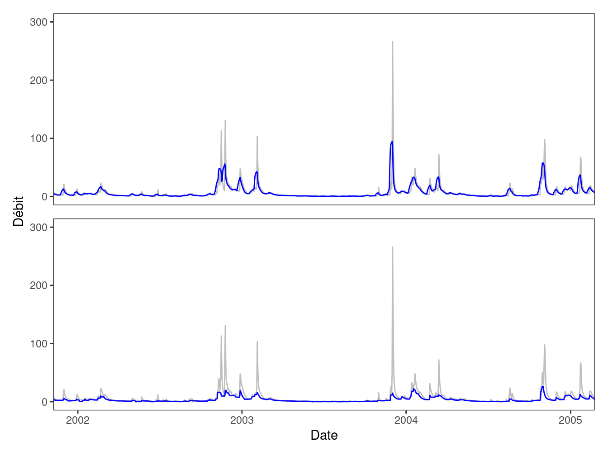

Chapitre 1 Données et statistiques descriptives
Les chroniques de débit issues de stations hydrométriques constitueront les données de base utilisées dans ce document. Dans un souci de simplicité, la plupart des exemples utilisent des débits journaliers, mais les méthodes statistiques présentées s’appliquent également à des débits à d’autres pas de temps (horaire, mensuel ou pas de temps variable). De manière plus générale, elles s’appliquent également à d’autres variables hydrométéorologiques (pluies, températures, vent, etc.) et sont également utilisées dans de nombreux autres domaines (sociologie, economie etc.).
La plupart des analyses statistiques ne s’effectuent pas directement sur la chronique initiale, mais plutôt sur des séries de variables hydrologiques qui sont extraites, par exemple, de la chronique de débits journaliers. Ces variables ont pour but de caractériser de manière quantitative le phénomène étudié (les crues, les étiages, la ressource). L’objectif de ce chapitre est tout d’abord de présenter quelques approches permettant de définir des variables hydrologiques en basses, moyennes et hautes eaux. Cette présentation ne sera pas exhaustive (les possibilités sont infinies…), et cherchera plutôt à illustrer la grande diversité de variables que l’hydrologue peut être amené à étudier. Dans un second temps, nous présenterons quelques méthodes de statistiques descriptives qui visent à résumer l’information contenue dans les séries de variables.
1.1 Définition de variables hydrologiques
En général, une variable hydrologique est calculée en deux étapes :
- Filtrage de la chronique initiale. Par exemple, il est fréquent de travailler à partir de la série des débits moyennés sur \(d\) jours.
- Extraction de la variable sur la série filtrée. Par exemple, on pourra calculer le minimum annuel, le nombre de jours passés sous un seuil de bas débit, etc.
1.1.1 Filtrage et autre pré-traitements
Le pas de temps de la chronique initiale n’est pas forcément adapté à l’étude du phénomène d’intérêt. Par exemple, pour les bassins à crue lente, le débit de pointe à un pas de temps fin n’est pas forcément la variable la plus pertinente. De même, si l’on s’intéresse aux écoulements liés à la fonte nivale, on pourra souhaiter « gommer » les variations rapides de débit dues à des faibles pluies se superposant au signal de fonte.
Ces considérations conduisent parfois à filtrer la chronique initiale avant le calcul des variables. Les quatre filtres présentés dans ce document sont les suivants :
- Moyenne mobile calculée sur une fenêtre de \(d\) jours.
- Minimum mobile calculé sur une fenêtre de \(d\) jours.
- Base Flow Separation (BFS), qui vise à séparer le débit de base du débit de ruissellement.
- Sequent Peak Algorithm (SPA), qui calcule un déficit de volume cumulé.
Le premier filtre est largement connu et utilisé en routine pour le calcul de débits caractéristiques. Les filtres suivants sont moins utilisés en pratique, mais sont présentés afin d’illustrer d’autres choix possibles pour le calcul de variables hydrologiques.
Dans le cas du filtrage par moyenne ou minimum mobile, la série filtrée \(S_t\) est obtenue à partir de la chronique journalière initiale \(q_t\) de la manière suivante :
\[ \begin{equation} \text{Moyenne mobile sur } d \text{ jours : } S_t=\frac{1}{d} \sum_\limits{k=t-d/2}^{t+d/2}q_k \\ \text{Minimum mobile sur } d \text{ jours : } S_t=\min_{k \in [t-d/2;t+d/2]}{q_k} \tag{1.1} \end{equation} \]
Dans l’équation (1.1), la fenêtre de calcul est centrée sur le pas de temps courant \(t\). Il est fréquent (notamment en statistiques) de calculer la moyenne ou le minimum sur une fenêtre \([t-d ;t]\) précédant le pas de temps courant \(t\). Ceci ne modifie que marginalement la série filtrée. Ces deux filtres ont pour effet de lisser les hydrogrammes en limitant les variations de débit à l’échelle journalière (cf. exemples en Figure 1.1). Le débit moyen sur \(d\) jours est proportionnel à un volume, alors que le débit minimum sur \(d\) jours peut être interprété comme la valeur continûment dépassée sur \(d\) jours consécutifs. Ce dernier filtre est notamment utilisé pour l’étude des crues.

Figure 1.1: Exemples de filtres appliqués à une chronique de débits journaliers. (a) Moyenne mobile sur 7 jours ; (b) minimum mobile sur 7 jours.